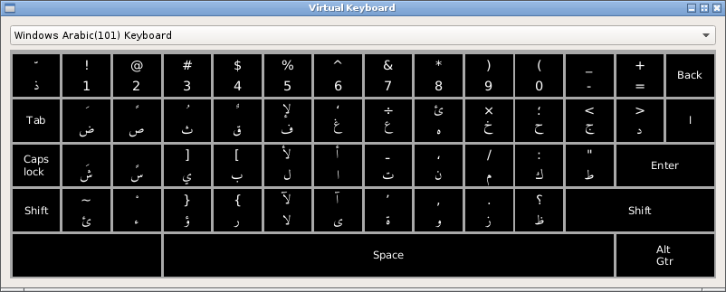

A virtual keyboard is defined by a configuration file (
keyboard.ini
[System]
Default=Windows Arabic (101) Keyboard
Keep aspect ratio=false
There are three ways to build a new keyboard layout
-
copy an existing configuration and make the required changes
-
write a configuration from scratch
-
write a simplified description (a text specification) and have the provided software build a configuration from it
All the following examples are for the Windows Arabic 101 keyboard layout. The text specification is shown here ,the full configuration is here and they keyboard appears as:

Some general information
Keys are arranged in a grid and are identified by a row and column number, although they may span more than one column.
Keyboard levels are usually activated by pressing the shift key or Alt Gr key: level 1 is no shift, level 2 is the shifted version of the key, level 3 is the Alt Gr version of the key. (On standard Western keyboards, for keys with three outputs these correspond to the bottom left,top left and bottom right characters as they appear on the physical key.)
To simulate holding down a key (eg Shift) on a physical keyboard, keys can be described as 'sticky': when clicked the key stays pressed until another key is pressed.
The term 'decoration' is used to describe what appears on the key - it may be different from the character that is output when the key is pressed.
A full configuration file is a standard .INI file consisting of [Sections] and key/value pairs. A text specification uses a fixed format to simplify writing a keyboard layout. For examples, the Windows 101 Arabic .INI file contains 438 lines; the text version has 81.
Text specification
The specification consists of a header section following by "START_KEYS" and then one line for eaach key. Lines beginning with '#' are ignored
Header section
# this is a comment and will be ignored
name=Windows Arabic(101) Keyboard
levels=2
groups=1
button width=110
button height=100
css=".arabic { font-family : Amiri;font-size: 30px} .latin { font-size: 24px} .inherited { font-family : Amiri;font-size : 30px} .common { font-size : 30px}"
horizontal%20spacing=5
vertical%20spacing=5
The appearance of the keys is controlled by the CSS specification, with separate classes for Arabic, Latin, common and inherited characters. The names of the classes correspond to the names in Unicode Character Database. The current list can be viewed here.
After the header, the individual keys are listed as single line entries
Key section
The format of a line is a comma delimited sequence of fields:
<row number>,<column number>,<key values>,<optional key decoration>,[ optional properties]
Key values and key decorations contain a colon separated list of values to output when the key is pressed. The first item is for level 1 output/decoraton, the 2nd for level 2 etc. The actual values may be given either as the character or as its hexadecimal value.
For instance the following:
3,5,ب:0x005b
specifies that the key at row 3, column 5 is to output 'ب' at level 1, and '[' at level 2 (i.e. when the shift key is pressed). Since no decoration field is given, the same values will appear on the key in the keyboard layout.
If the key is required to output more than one value, the values should be separated by a semi-colon. For example
#3,6 shift gives: lam + alef with hamza above (0x644,0x623)
3,6,ل:0x0644;0x0623,ل:لأ
Without shifting, the key outputs 'ل'. When shifted two characters are output: lam (0x644) and alef with hamza above (0x623). They keyboard decoration shows the two values.
The Alt Gr key illustrates some of the properties than be specified:
5,13,<AltGr>,Alt Gtr,[type=level3,sticky=true,span=2]
"type=level3" indicates that pressing this key moves the level to 3.
"sticky=true" that the key will remain pressed until the next key
"span=2" that the key occupies two columns
An often needed property is 'vpos', used to adjust the position of the decoration:
3,3,س:ٍ,[level2/vpos=10]
Adjusts the position of the level 2 character (kasratan) downwards 10 pixels. (A negative number moves it upwards.)
Converted a text specification to a configuration file
A Perl script is provided to create a full configuraton file:
perl genkeydef.pl -i windows101.txt -o windows101.ini
Once created, the configuration file should be copied to the "keyboards" directory of the current theme. (The directory structure is described here.)
Configuration file format
The full configuration is a more verbose and machine readable version of the description given above. So the key described here becomes:
[Key3-6]
row=3
col=6
type=char
level1/value=ل
level2/value="0x0644,0x0623"
level1/decoration=ل
level2/decoration=لأ
The file contains a header section, a mandatory 'CharacterCodes' section and one section for each key.
Further information can be found in the genkeydef.pl script referred to above.